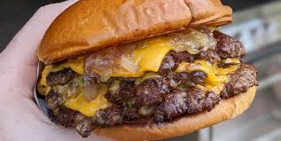

Home

Smash burgers: Brother's favorite
This recipe is extremely popular in the United States. It is also one of my brother's favorite
burger styles. He especially likes the ones from places such as Five Guys.
Ingredients:
Main:
- Best 80/20 grounded beef you have
- Brioche or similar type buns
- Any cheese you like
- Some oil to cook
Some Toppings:
- Onions, preferrably caramalized
- Bacon
- Another patty
- French Fries
- Condiments such as BBQ sauce, ketchup, mustard, etc
- Okay now the boring ones: Tomatoes, Lettuce, whatever else you want
Steps:
- High heat on your cooking surface, add the oil until hot.
- Throw in the patties, and SMASH, here would be a good time to add onions on top while first side sears.
- Before it starts to burn, flip the patty over and let it finish off, add the cheese on top to let it melt
- You can cook the buns a bit if you want
- Put the patties and cheese on the bun, and add your toppings. DONE.